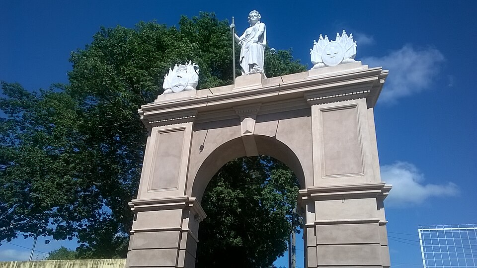

El Club
El club mas longevo de Zona Sur de Rosario
Tiro Suizo de Rosario fue fundado el 10 de noviembre de 1867 por un grupo de inmigrantes suizos que buscaban conservar sus tradiciones y promover la práctica del tiro al blanco, una actividad muy arraigada en su país de origen. Con el tiempo, el club se convirtió en una de las instituciones más antiguas de la ciudad y un referente deportivo y social de la zona sur de Rosario. Además de su actividad inicial relacionada con el tiro, fue ampliando su oferta deportiva y cultural, fomentando el compañerismo, la educación física y los valores comunitarios que caracterizan a su rica historia.
